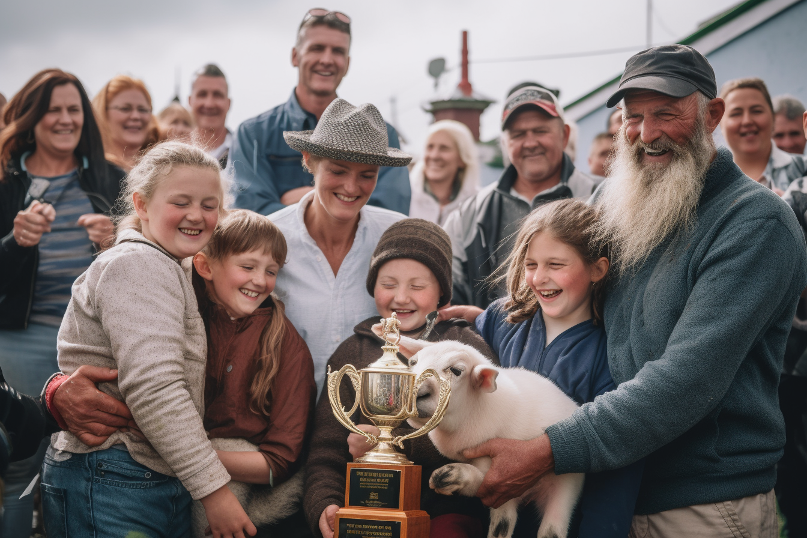

A Close Shave: How a Ukrainian Family from Cahersiveen Wool-ed Their Way to Victory in the Annual Sheep-Shearing Contest
Fleece Frenzy: The Secret Technique That Has Irish Farmers All A-Buzz
By |
When it comes to sheep shearing, most people think of pastoral scenes and quaint traditions. But this year, the sleepy town of Cahersiveen has been shaken by a hilarious turn of events - a Ukrainian family has emerged victorious in the annual sheep-shearing contest, leaving competitors and spectators alike in stitches.
Meet the Tkachenkos: a family of five that has taken the Irish countryside by storm. Having moved to Cahersiveen just two years ago, the family has now caused quite a stir with their unorthodox and side-splittingly entertaining approach to sheep shearing.
The secret behind the Tkachenko's roaring success? A technique so absurd, it might just be genius. With their trusty pair of oversized, custom-made garden shears and a synchronized shearing routine that looks like a cross between Riverdance and the Macarena, this family has revolutionized the way we look at sheep shearing.
The Tkachenko's story began when patriarch Ivan, a former circus performer, decided to leave Ukraine and settle in Cahersiveen with his wife, two children, and eccentric uncle, Yuri. After watching a local shearing competition, Ivan couldn't resist applying his unique background to the task at hand. Drawing from his experience as a juggler and acrobat, Ivan devised a hilarious and efficient technique that left their flock looking like they'd been styled by Vidal Sassoon.
As the family took the stage at the annual sheep-shearing contest, their competitors couldn't help but chuckle at their outlandish attire - matching neon green jumpsuits adorned with images of sheep - and their oversized, comically large shears. Little did they know, the Tkachenkos were about to shear their way into the history books.
The family's secret technique involves a choreographed dance routine, with each member of the family taking turns shearing a sheep while simultaneously performing gravity-defying flips and spins. The crowd was in stitches as they witnessed the Tkachenkos skillfully transform the once fluffy sheep into sleek, aerodynamic specimens.
The judges, initially skeptical of the family's bizarre methods, were soon won over by the efficiency and hilarity of their technique. When the shearing was complete, not only were the sheep immaculately shorn, but the Tkachenkos had managed to do it in record time.
The secret to their success, according to Ivan, is a combination of "precision, teamwork, and a healthy dose of humor." The family's victory has not only brought a new level of entertainment to the traditional event, but it has also opened the door to a world of possibilities for unconventional sheep-shearing techniques.
So, the next time you think of sheep shearing, don't be surprised if the image of the Tkachenko family, clad in neon green jumpsuits and brandishing giant shears, leaps into your mind. Thanks to this unlikely group of trailblazers, the world of sheep shearing will never be the same.
Disclaimer: This is a fictional news article and is intended for entertainment purposes only.
None of the events or characters depicted here are real or based on any factual sources.